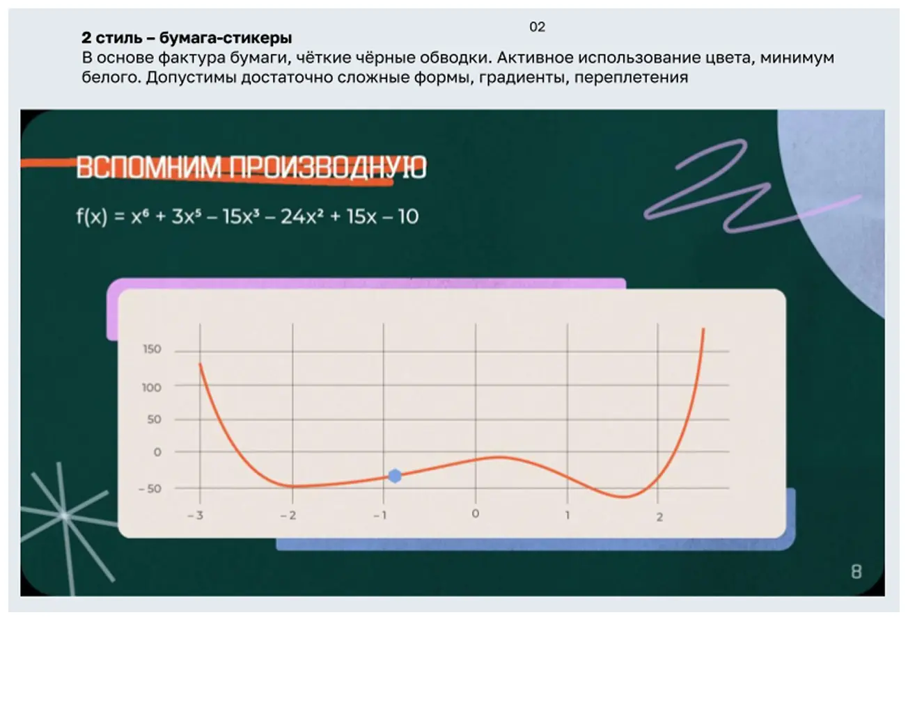
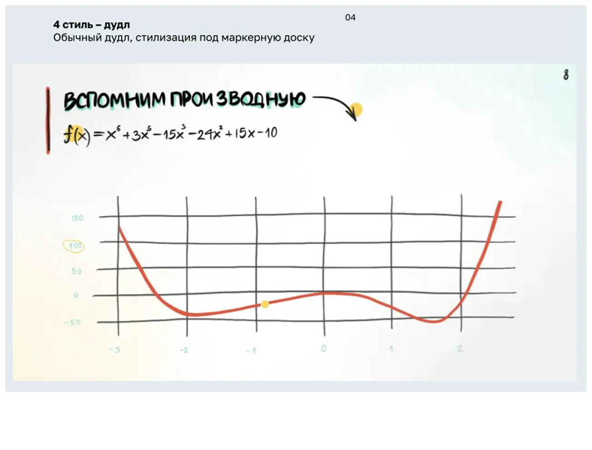
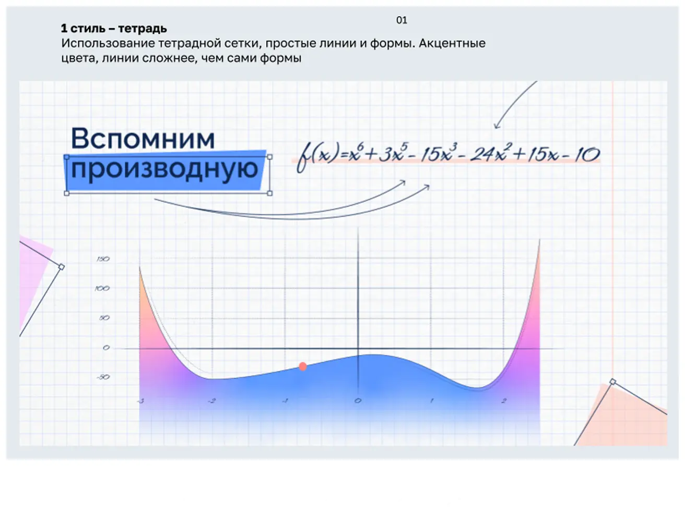
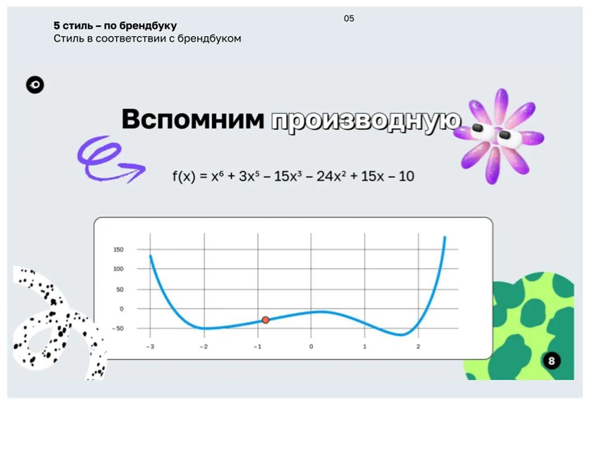
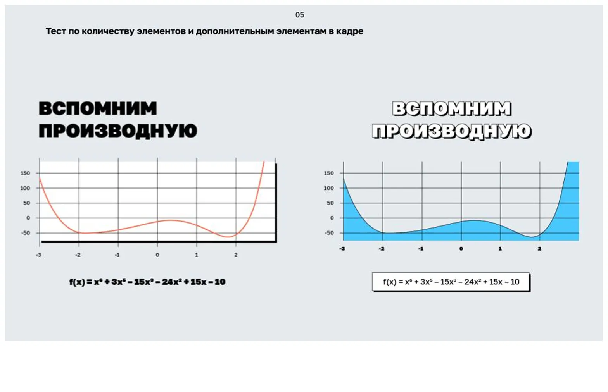
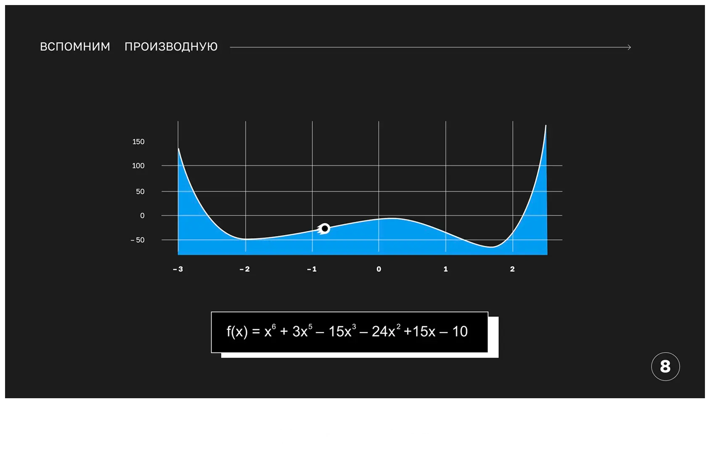
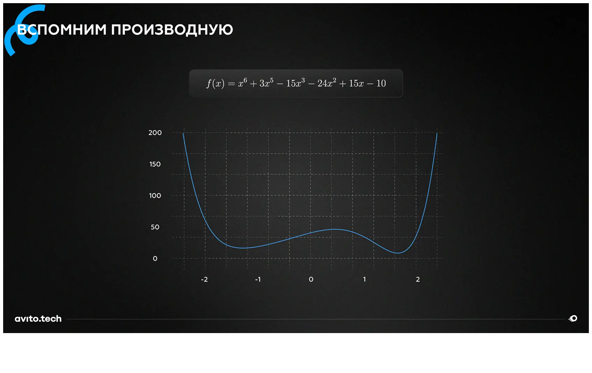

Задача
Образовательный проект в сфере технологий. Нужно было оформить курс: много данных, разрозненная структура, сложная подача. Задача — сделать сложное понятным через ясный визуал. Сделали гайдбук. Оптимизировали под анимацию: вся графика — с учётом движения. Настроили чёткую структуру и навигацию, чтобы дизайнеры, редакторы и аниматоры работали синхронно.
На старте нужно было определить визуальную концепцию курса. Мы подготовили несколько поисковых направлений, но в итоге клиент решил опираться на фирменный стиль. Дальнейшая работа велась в рамках брендбука Avito.








Из-за ограничений редакторов и формул в SVG возникли проблемы с выравниванием. Всё собирали вручную по мелкой сетке. Чтобы избежать хаоса, разработали строгий гайдлайн: зафиксировали размеры, отступы и правила для формул и графиков. Это помогло создать чёткую структуру и упростить работу всей команды.
Материалов было много — понадобилась чёткая структура. Выделила отдельный этап на организацию файлов и слайдов. Для команды ввела документацию с описанием всех элементов.
Все данные в кейсе вымышлены.